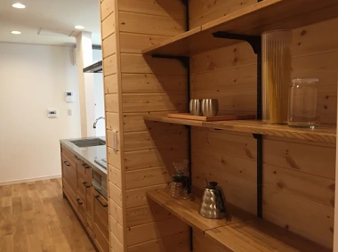
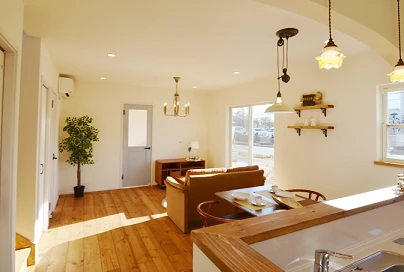

社長にインタビュー①
こんにちは。富山で自然素材にこだわるホンモノの家、フジ創アイノスです。 今回はフジ創アイノスの荒井社長に、家づくりへの思いをインタビューしました。 荒井社長 「本当に住み心地の良い家」「長持ちする家」「 家族が幸せを感じ
続きを読む →FUJISOU AINOS JOURNAL
家づくりのこと、暮らしのこと。
日々の想いを、お伝えします。
家づくりについて 556件 ／ 新しい記事から 3・24ページ
こんにちは。富山で自然素材にこだわるホンモノの家、フジ創アイノスです。 今回はフジ創アイノスの荒井社長に、家づくりへの思いをインタビューしました。 荒井社長 「本当に住み心地の良い家」「長持ちする家」「 家族が幸せを感じ
続きを読む →
こんにちは。富山で自然素材にこだわるホンモノの家、フジ創アイノスです。 もし賃貸に住み続けるとしたら、一生に払う家賃はいくらになるでしょうか。 30歳の人が85歳まで毎月家賃を払うと考えると、残り55年間払い続けなければ
続きを読む →
こんにちは。富山で自然素材にこだわるホンモノの家、フジ創アイノスです。 最近花粉が飛び始めたそうで、花粉症の人たちにはつらい季節になってきました。 目のかゆみや鼻水のアレルギー症状がつらいですよね...。 ビフィズス菌な
続きを読む →こんにちは。富山で自然素材にこだわるホンモノの家、フジ創アイノスです。 昨日は雛祭りでしたね。我が家でも雛人形を飾っていました。 子どもが災いに遭わないように、健やかな成長を祈願する意味があるそうです。 フジ創アイノスは
続きを読む →
3月12日（土）13日（日）, 19日（土）20日（日）21日（月・祝）の5日間、富山市山室で完成見学会を開催します！ 今回会場となるのは、標準仕様が"フルセット"の住宅に、さらに数々のオプションを追加した特別仕様のお家
続きを読む →
こんにちは。富山で自然素材にこだわるホンモノの家、フジ創アイノスです。 今回はフジ創アイノス、現場管理担当の磯部さんにインタビューしました。 Q.磯部さんのお仕事について教えてください。 磯部さん 「家づくりの現場には、
続きを読む →
こんにちは。富山で自然素材にこだわるホンモノの家、フジ創アイノスです。 家を建てられる方には子育て世代がとても多いです。 また、その多くの方はお子さんが生まれたばかりです。 そんなご家族の家づくりで重要になってくることが
続きを読む →
こんにちは。富山で自然素材にこだわるホンモノの家、フジ創アイノスです。 家が建っていない土地を見ると、イメージしているよりも狭く小さく感じてしまったことはありませんか？ そう感じたことで、2階建しか建てることが出来ないと
続きを読む →こんにちは。富山で自然素材にこだわるホンモノの家、フジ創アイノスです。 一般的に、「平屋は高い」と思われています。 確かに同じ面積の家を建てるとしたら、平屋は2階建よりも高くなってしまうのですが、そもそも同じだけの部屋と
続きを読む →
こんにちは。富山で自然素材にこだわるホンモノの家、フジ創アイノスです。 今日は２０２２年２月２２日。２（にゃん）が６つもある「スーパー猫の日」だそうです。 アイノスの家に引っ越してから１年後にやってきた我が家の猫も、すっ
続きを読む →
こんにちは。富山で自然素材にこだわるホンモノの家、フジ創アイノスです。 中庭のある家のメリット 中庭のある家では、毎日の洗濯が楽になります！ まず、洗濯機がある脱衣室が中庭に面していると、脱衣室から数歩で洗濯物を干すこと
続きを読む →こんにちは。富山で自然素材にこだわるホンモノの家、フジ創アイノスです。 お風呂場に置く椅子の真ん中には、なぜ穴が空いているのかご存じですか？ 真ん中に穴を開けることで、上からかかる荷重をうまく分散させて、強度を増している
続きを読む →
こんにちは。富山で自然素材にこだわるホンモノの家、フジ創アイノスです。 ▼坪単価が安い家は、結局高い買い物となる 坪単価が安い家とは、言い換えるなら面積が大きい家です。 そして、家の面積が大きくなるということは、結局家の
続きを読む →こんにちは。富山で自然素材にこだわるホンモノの家、フジ創アイノスです。 「リビングは広ければ広いほどいい」 「収納もたくさんほしい」 「念のため和室もつくっておきたいし、時にはゆっくり1人でこもれる書斎も欲しい」 「寝室
続きを読む →
こんにちは。富山で自然素材にこだわるホンモノの家、フジ創アイノスです。 フジ創アイノスの家づくりは、お客様のご希望に合わせた３つのスタイルを提案しています。 もちろん、どれもこだわりの自然素材で作っています。 まずは、自
続きを読む →
こんにちは。富山で自然素材にこだわるホンモノの家、フジ創アイノスです。 通り抜け動線は収納を減らす原因に 前回に続いて知っておいていただきたいことが、通り抜け動線についてです。 収納を通過することが出来る動線や、玄関を家
続きを読む →
こんにちは。富山で自然素材にこだわるホンモノの家、フジ創アイノスです。 "収納はたくさんあればあるほどいい" 家を建てる誰もがこのようにお考えになると思います。 しかしむやみに収納を広げてしまうと、家のコストは上がってし
続きを読む →
こんにちは。富山で自然素材にこだわるホンモノの家、フジ創アイノスです。 子ども部屋を２階に作っても、小さな子どもたちは親がいないところで遊ぼうとしないし、親も、目が届かない所で子どもたちを遊ばせたくありませんよね。 でも
続きを読む →こんにちは。富山で自然素材にこだわるホンモノの家、フジ創アイノスです。 最も多く建てられている家は、 "総2階建て" と呼ばれる1階と2階の面積がほぼ同じ家です。 その理由は、この家の建て方が一番コストがかからないからで
続きを読む →
こんにちは。富山で自然素材にこだわるホンモノの家、フジ創アイノスです。 アイノスの家づくりの特徴は、自然素材を使った家、丈夫で長持ちする家、シンプルでコストを抑えた家、ということです。 ◆自然素材 「無垢の床材」「漆喰塗
続きを読む →
こんにちは。富山で自然素材にこだわるホンモノの家、フジ創アイノスです。 一般的な内装材には、一見木に見えても、印刷された木目のシートや、薄い単板を貼り合わせたものがあります。 遠目で見るとどうしても工業化されたような均一
続きを読む →
こんにちは。富山で自然素材にこだわるホンモノの家、フジ創アイノスです。 前回、本物の無垢の木のメリットに、「調湿効果」をご紹介しました。 二つ目のメリットは、「断熱・保温性」です。 木の素材の熱伝導率はコンクリートの約１
続きを読む →
こんにちは。富山で自然素材にこだわるホンモノの家、フジ創アイノスです。 今、住宅にとって切り離せない問題に「結露」があります。 日本は湿度が高い上に、最近は高気密住宅が増えていて空気を通しにくくなっています。 湿気で起き
続きを読む →
こんにちは。富山で自然素材にこだわるホンモノの家、フジ創アイノスです。 もう1月も終わりですね。 ついこの間年が明けたと思っていたのに、、時間の流れがどんどん速くなっているように感じます(^^;) 「丁寧な暮らし」という
続きを読む →